Painting Series
Emotional Big Bang
Emotional Big Bang explores moments of emotional transformation, where feelings expand beyond language and take shape through colour, gesture and movement. Rather than depicting specific events, the works examine emotional states in transition, collisions between memory, desire, uncertainty and hope. The series approaches abstraction as a visual field where emotions emerge, dissolve and reconfigure themselves.
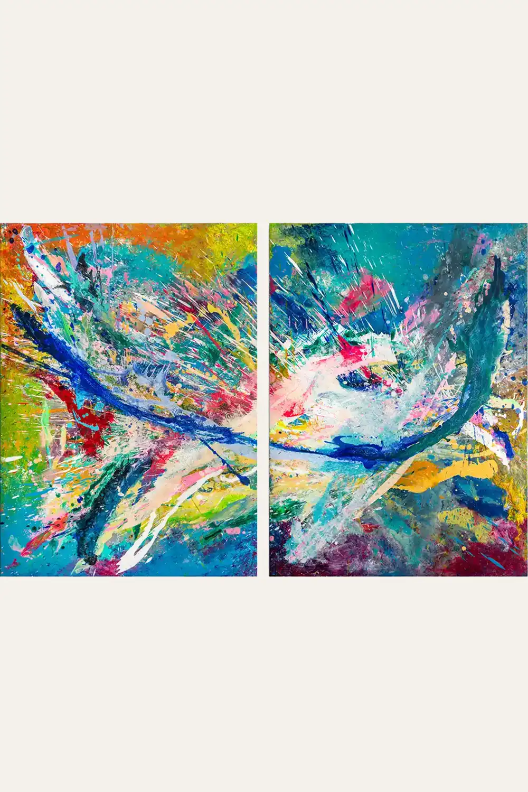
A Few Seconds Before Joy
Acrylic on canvas · 2022
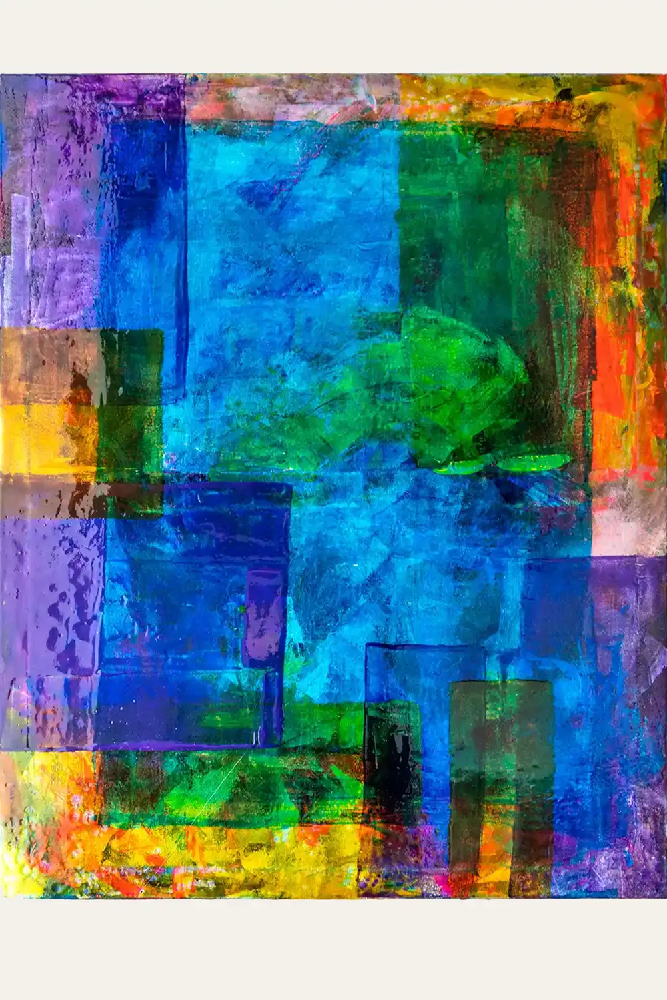
Afterimage
Acrylic on canvas · 2022
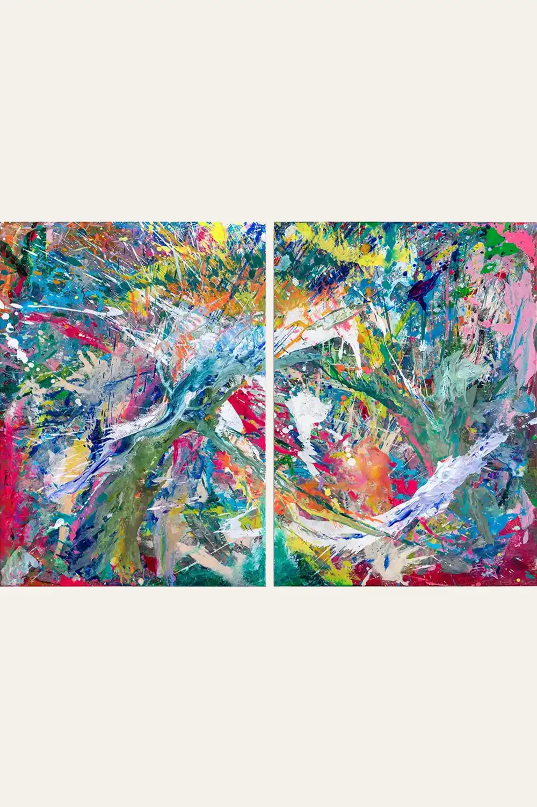
Harmony
Acrylic on canvas · 2022
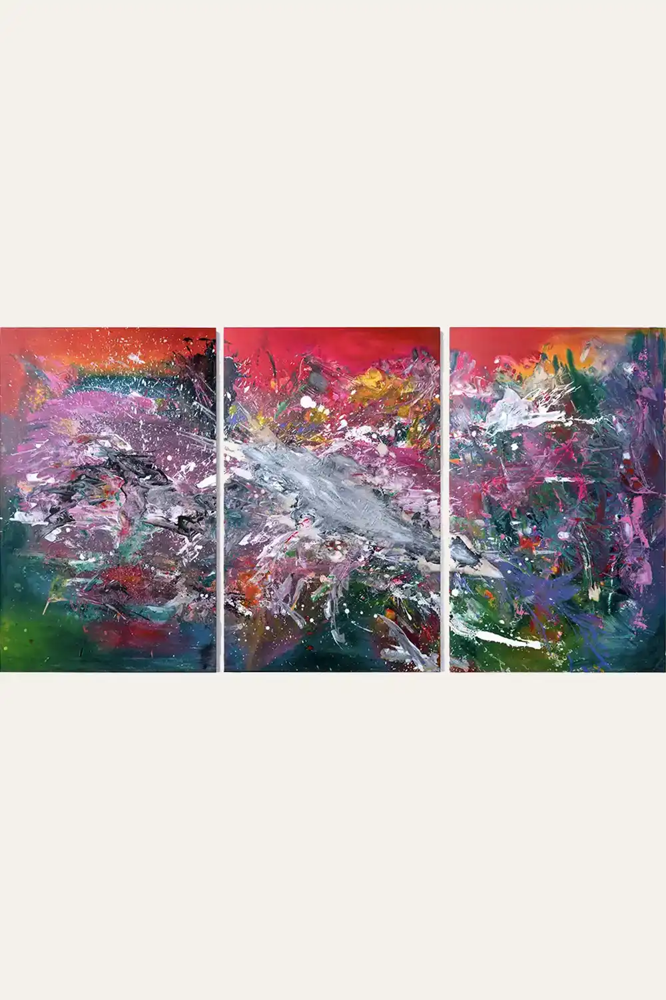
Harmony of Power
Acrylic on canvas · 2022
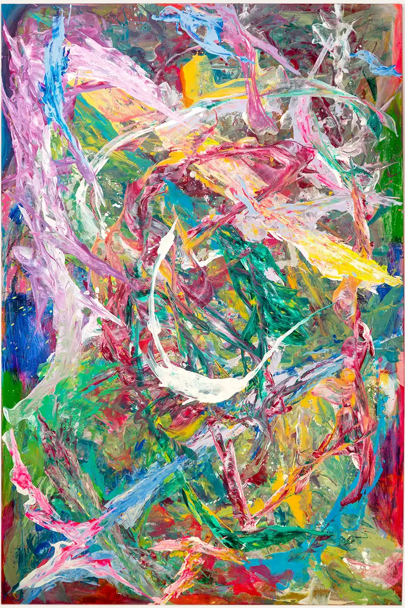
Journey of Hope
Acrylic on canvas · 2022
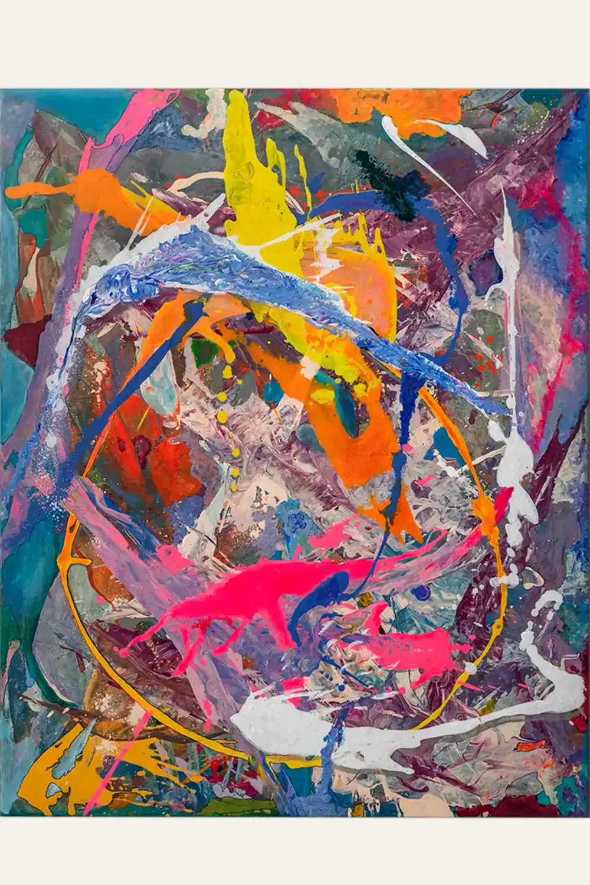
Let It Talk
Acrylic on canvas · 2022
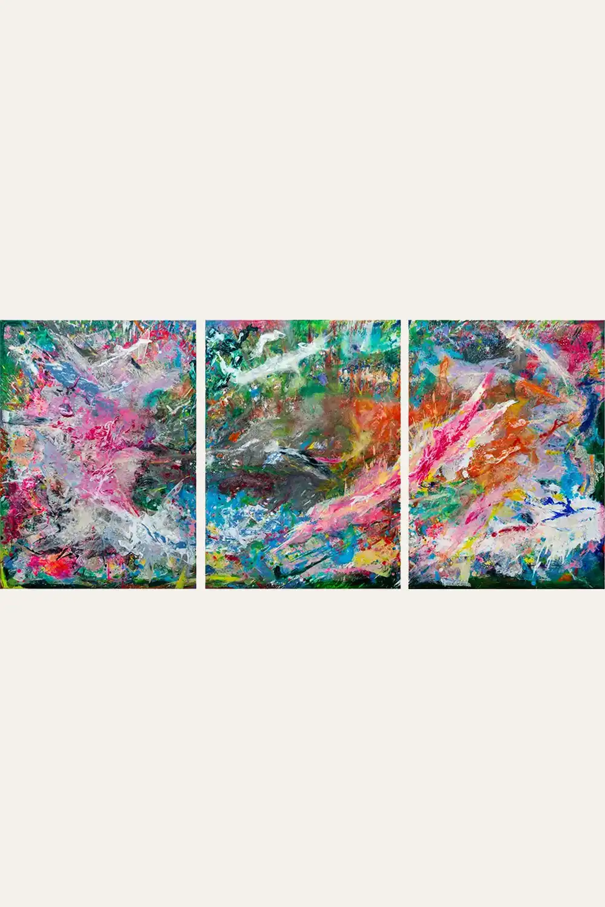
Metamorphosis
Acrylic on canvas · 2022
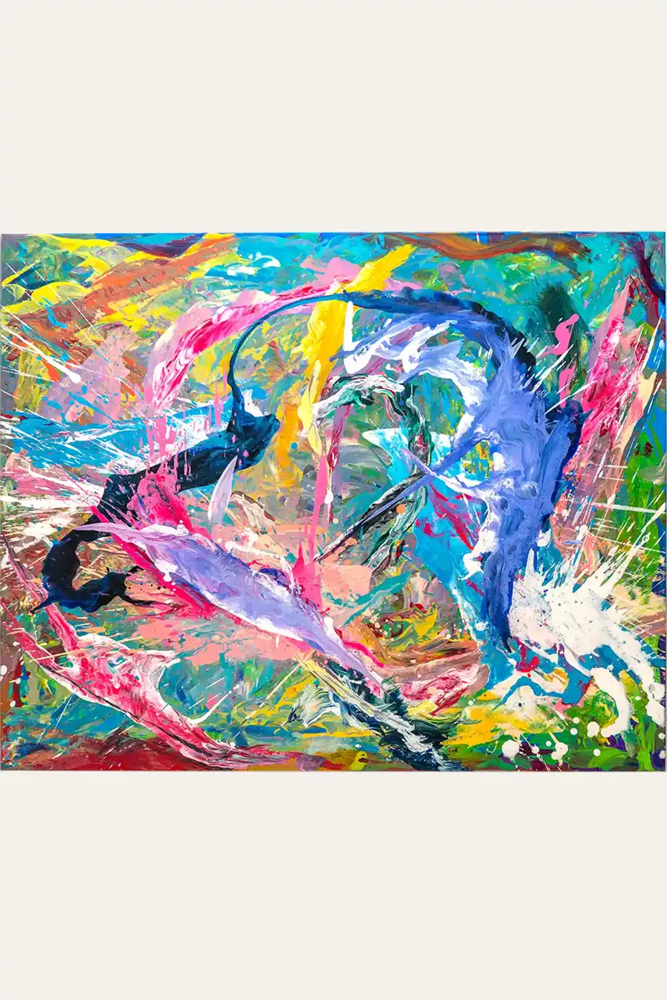
Opportunist
Acrylic on canvas · 2022
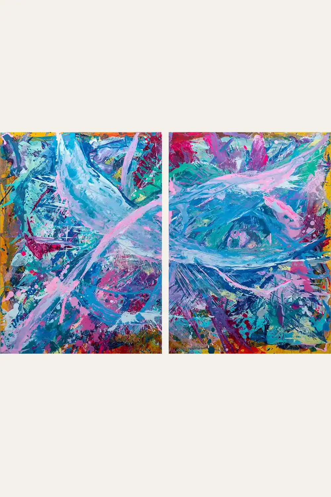
Singing Under the Fireworks
Acrylic on canvas · 2022
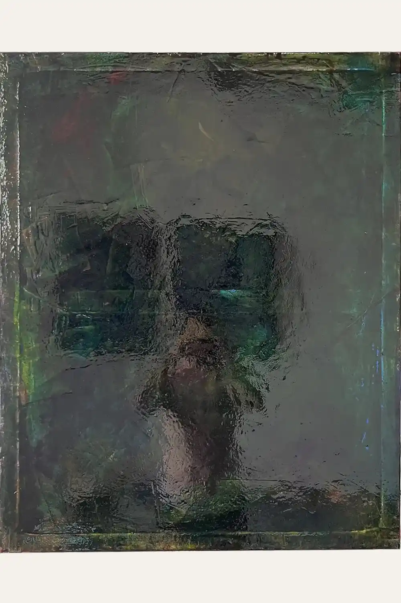
Subconscious
Acrylic on canvas · 2022
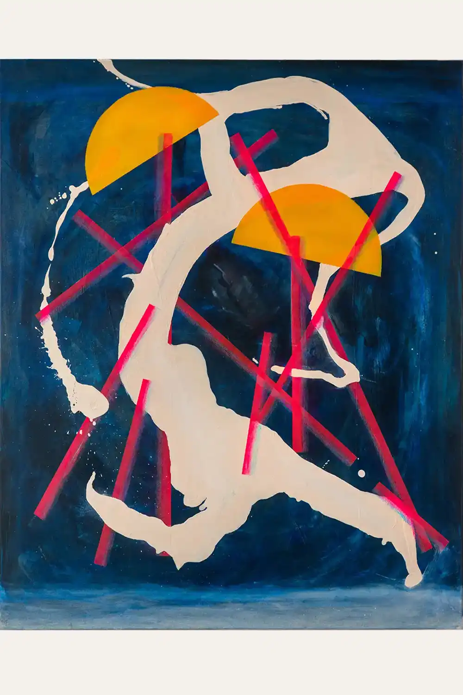
Sweet Disposition
Acrylic on canvas · 2022
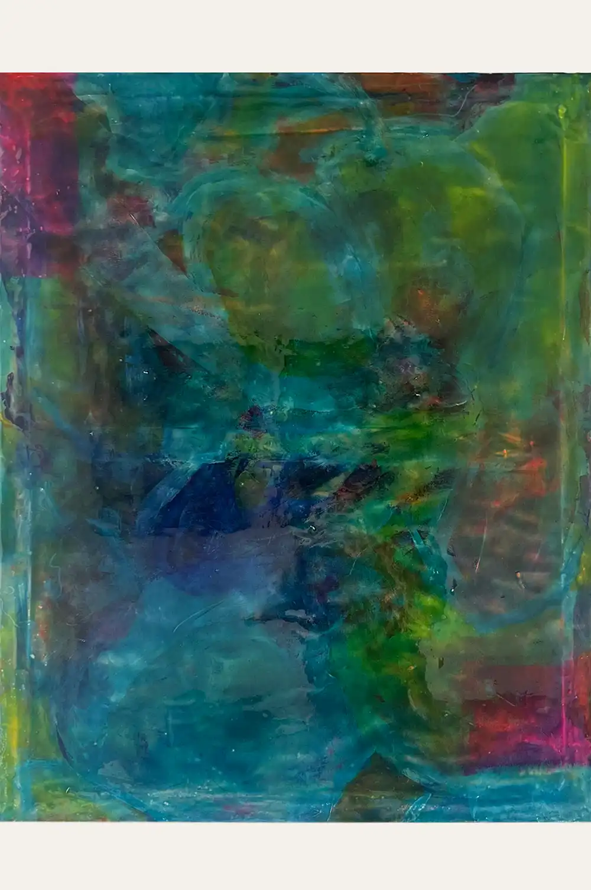
Under My Mind
Acrylic and epoxy on canvas · 2023